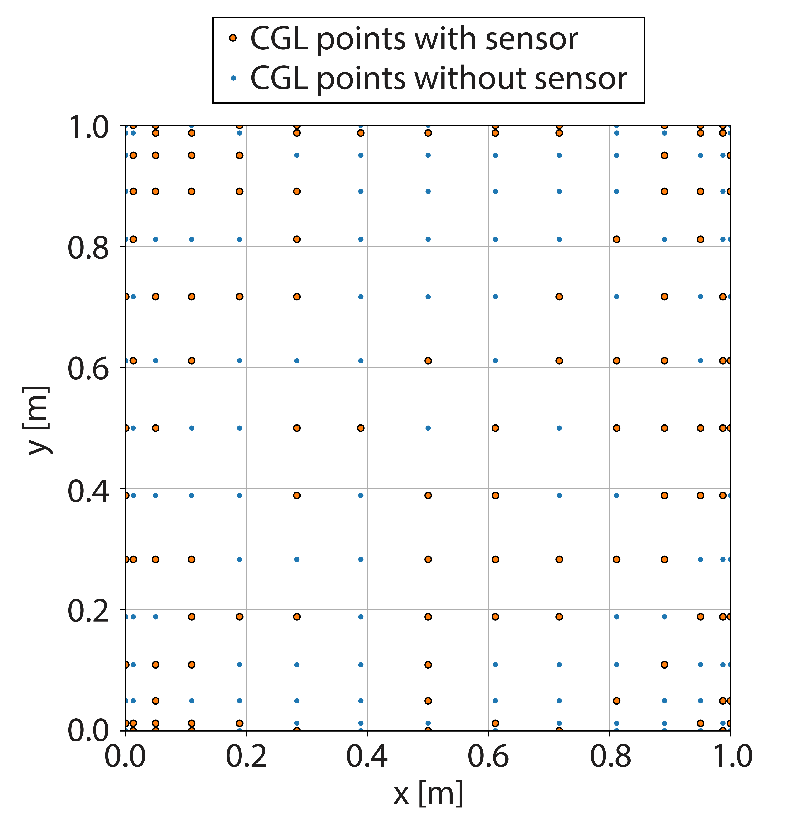

Inverse spectral Chebyshev and compressed sensing framework for full-field reconstruction in computational mechanics
Mechanical Systems and Signal Processing, 258, pp.114766, 2026. Journal Article

Abstract
This paper presents an inverse spectral Chebyshev (ISC) operator framework and its compressed-sensing extension (ISC-CS) for full-field reconstruction of structural responses from sparse and noisy measurement data. The ISC formulation is developed as a deterministic variational/least-squares inverse technique in which the equations governing the unknown structural fields are discretized based on spectral Chebyshev (SC) method with boundary conditions, strain–displacement relations, and equilibrium constraints enforced through the associated spectral operators. When the available measurements are far fewer than the unknown degrees-of-freedom (DOFs), the framework is extended to ISC-CS by exploiting the intrinsic sparsity/compressibility of mechanical fields in the Chebyshev coefficient space. The Chebyshev representation is particularly suitable for bounded non-periodic structural domains because it provides endpoint-compatible interpolation, rapid coefficient decay for smooth fields, and direct construction of differentiation, integration, and inner-product operators. The sparse inverse problem is solved using an equilibrium-informed iterative hard-thresholding algorithm with adaptive step-size control and momentum acceleration, tailored to the matrix-operator structure of the SC method. This enables robust reconstruction without requiring prior knowledge of the external loads. A theory-guided sparsity selection strategy based on Bernstein-type analyticity arguments is introduced, linking spectral coefficient decay to measurement noise levels and providing conservative, physics-informed sparsity bounds. Dedicated numerical studies using a forward SC method substantiate these theoretical insights by quantifying effective sparsity levels for displacement, curvature, and shear strain fields, demonstrating their suitability for compressed-sensing-based reconstruction despite the presence of spatial derivatives. Building on these findings, the proposed framework is validated through numerical case studies involving a Timoshenko beam and a Mindlin plate under both two-sided and single-sided strain-based sensing configurations. In the two-sided plate case, a purely kinematic ISC reconstruction is achieved, whereas the single-sided configuration, which is known to be ill-conditioned in classical inverse finite element formulations, is stabilized by enforcing equilibrium constraints. Across all cases, accurate recovery of displacement, rotation, curvature, and shear strain fields is demonstrated using significantly fewer sensors than DOFs, with low reconstruction errors even in the presence of additive Gaussian noise. The results highlight the robustness, noise tolerance, and scalability of the proposed ISC/ISC-CS framework, establishing it as a promising alternative to conventional inverse finite element approaches for shape sensing and structural health monitoring applications.